| ・ 流体工学懇話会第168回研究会＠センタープラザ西館 (H25.03.09) | |||
村田先生（代表）と助教の人（幹事）で、流体工学懇話会の第168回研究会を開催しました。昨年の10月に秋季技術交流フォーラムをやり、今回は1名の退職される先生を含め2名によるご講演です。次回は関西支部定時総会の講演会をお世話します。 |
|||
|
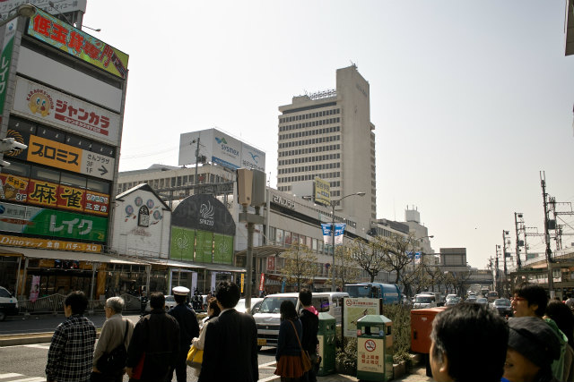
三宮駅近くのセンタープラザ西館で開催 |
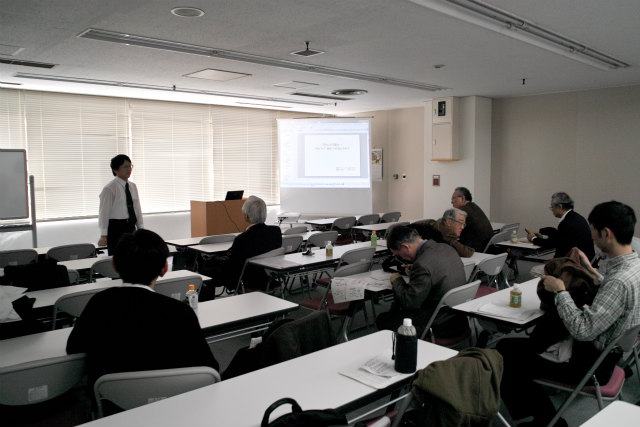
村田先生挨拶中 | ||
|
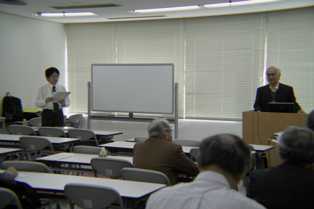
植村 知正先生「「流れの可視化」−−判るから測るへの流れの中で」 |
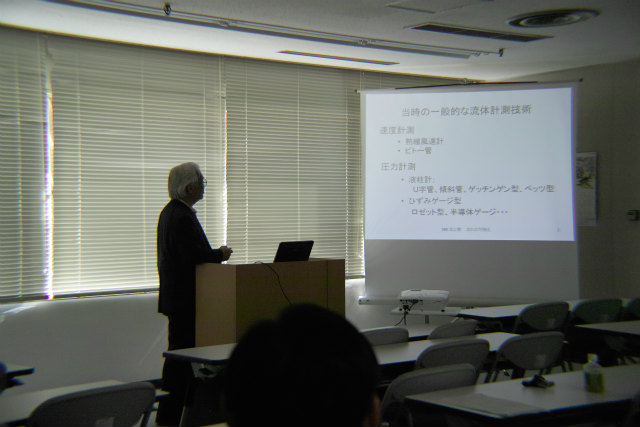
可視化の歴史を追体験できました | ||
|
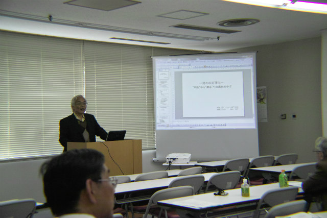
質疑応答の時間 |
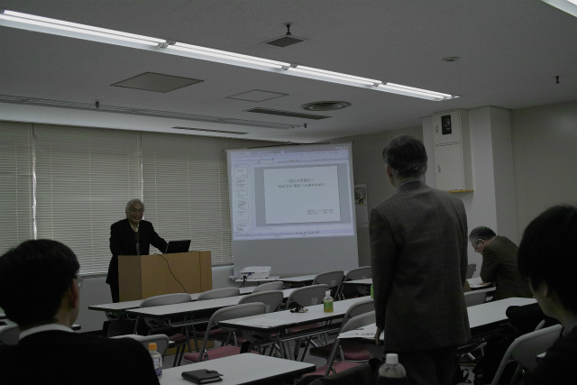
具体的な質問が多くて盛り上がります | ||
|
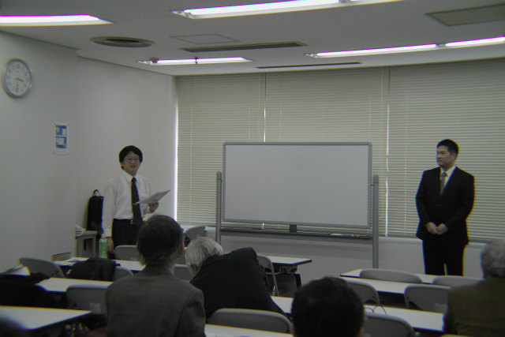
村田先生挨拶中 |
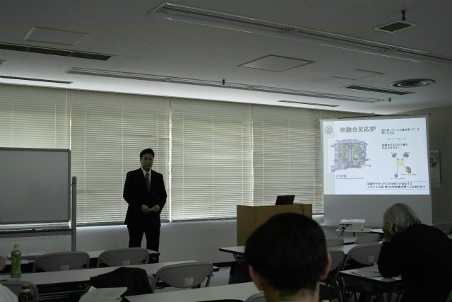
伊藤 和宏先生「噴流表面波の光学測定と速度せん断層安定性解析との比較」 | ||
|
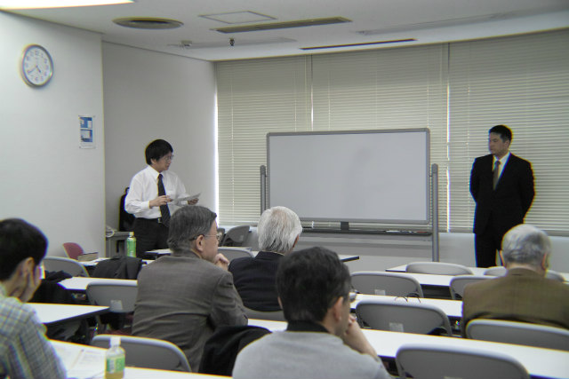
それでは質疑応答に移ります |
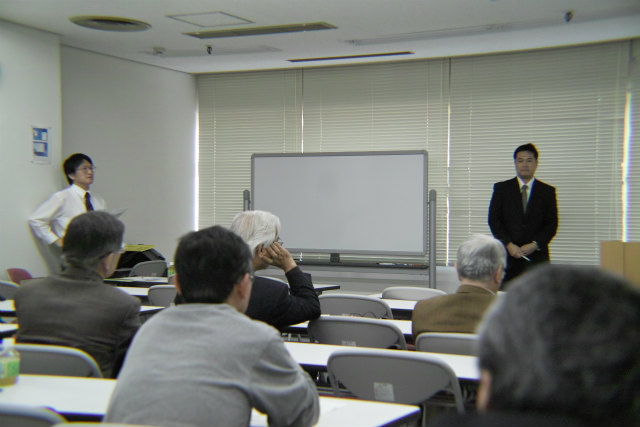
かなり細かい内容でも質問あります | ||
|
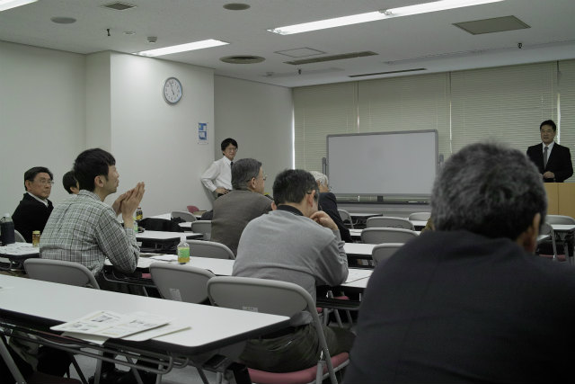
なるほど |
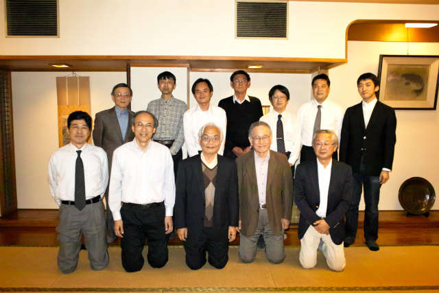
懇親会にて | ||